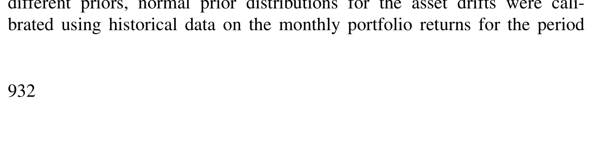
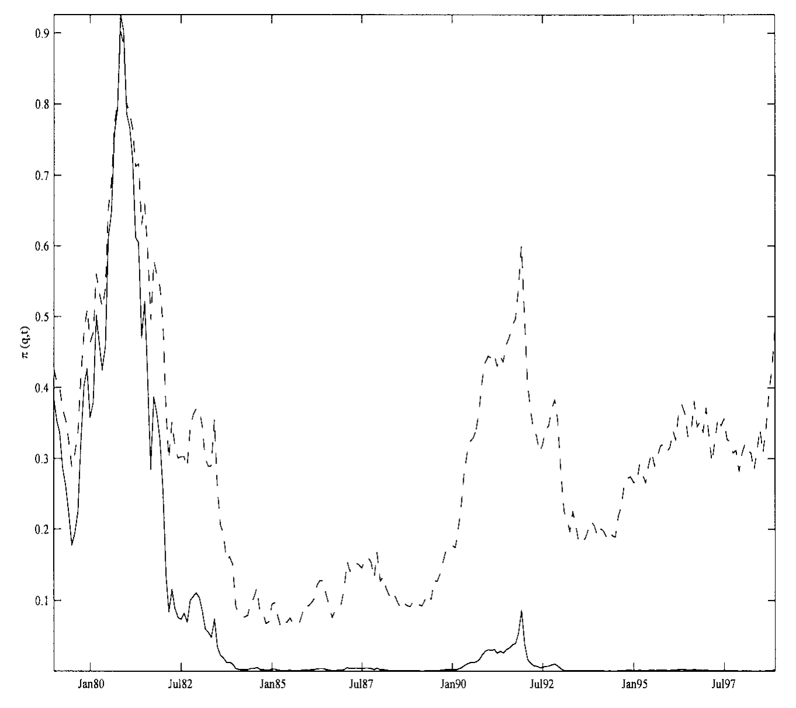
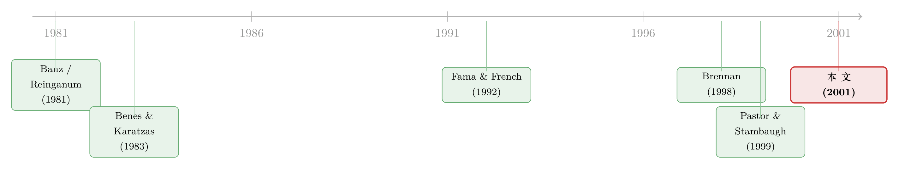

街上捡到一张百元大钞，你敢信它是真的吗？
本文读的是 Brennan & Xia (2001, Review of Financial Studies)：当一个投资者发现了一个资产定价异象（比如 Fama-French 的 SMB、HML 相对 CAPM 的超额收益），却又拿不准它是真金还是数据挖出来的假币时，他应该怎样投资？作者给出的答案是——别在"全信"和"全不信"之间二选一，而是给"它是真的"赋一个概率，把这个概率写成两个正态分布的混合先验，然后让市场用一天天实现的收益替你不断更新它。最漂亮的一步是：混合正态先验更新之后，后验仍然是混合正态，而已实现收益 q 就是它的充分统计量。
1 一个让人左右为难的开场
先讲一个金融学里几乎人人都听过的段子。有人在地上看见一张百元大钞，弯腰去捡——旁边的有效市场信徒拦住他：「别捡，要真有百元大钞，早被人捡走了。」
异象（anomaly）研究者面对的，正是这种尴尬。所谓异象，按本文的定义，是「某些证券特征所对应的已实现平均收益，与某个资产定价模型所预测的收益之间，存在统计上显著的差异」。规模效应、账面市值比效应、动量、盈余公告后漂移……过去四十年，它们先是涓涓细流，后来成了滔滔洪水。可问题是：它们是真的吗？
这里的怀疑并不是矫情。Black (1993) 就直言「困扰投资学文献的大多数所谓异象，很可能只是数据挖掘的产物」；做了一辈子量化的 Roll (1994) 更是现身说法——他承认自己十年间真金白银地去交易那些「看上去最诱人的无效率」，结果是「这些效应在已发表的实证研究里强得惊人，但我至今没找到一个在实践中真正管用的」。
于是一个投资者站在了十字路口。他面前摆着 Fama 和 French (1993) 构造的两个零净投资组合：SMB（买小公司、卖大公司）和 HML（买高账面市值比、卖低账面市值比）。在 1963–1993 年间，它们的月均收益分别是 0.28% 和 0.46%，相对 CAPM 显著为正。
要不要去赚这笔钱？
「全信」——把它当成铁律，重仓压上去——可万一它只是数据挖掘的幻觉呢？「全不信」——那 CAPM 就是真理，可学术界吵了这么多年也没人敢拍板。真正棘手的地方在于：这不是一道是非题，而是一道概率题。
2 把「半信半疑」写成一个数
接着，一个自然的想法浮现出来：既然投资者既不能确定异象是真的、也不能确定它是假的，那就给「它是真的」赋一个概率 π₀。
这正是本文的出发点。投资者对资产真实漂移（drift，即期望收益向量）x 的先验，被写成两个正态分布的混合 (mixture of two normal distributions)：
- 一个正态，对应「CAPM 成立、异象纯属统计假象」这一原假设。在这个世界里，期望收益受 CAPM 约束，只剩一个待估参数——市场风险溢价；
- 另一个正态，对应「异象是真的、CAPM 被违反」这一备择假设。此时
MKT、SMB、HML的期望收益不受约束，可以直接从历史数据估出来。
混合的权重 π₀，就是投资者心里那杆秤：他有多相信 CAPM 真的成立。
作者特意指出，这个「混合正态」先验，并不要求你真的在两个模型之间死磕。哪怕你压根不信 CAPM 严格成立（毕竟我们永远观测不到真正的市场组合），你也可能愿意给「一个用某个市场代理近似的 CAPM 关系」分配一点权重，把它当作构造先验的一块积木。换句话说，π₀ 既可以读成「我相信模型的概率」，也可以读成「我愿意向模型借用多少信息」。
到这里，问题被悄悄地重新表述了。原本「异象真不真」的哲学争论，变成了一道带学习的动态决策题：随着时间推移、收益一笔笔实现，投资者要不断修正 π₀，再据此调整手里的仓位。这正是本文与同类研究最不一样的地方——它关心的不是「此刻最优持仓是多少」，而是「未来还会学到东西」这件事，如何反过来改变你今天的决策。
3 推断问题：让市场替你更新信念
那么，收益一旦实现，信念该怎么更新？这就进入了本文的第一块硬核——投资者的推断问题 (inference problem)。
3.1 设定
设 S ≡ ln P 为（含再投资股利的）资产对数价格向量，它服从一个漂移未知的几何布朗运动：
$$dS = x\,dt + \sigma\,dz$$
这里 x 是一个常数但不可观测的 (n×1) 漂移向量，σ 是已知的 (n×n) 矩阵，dz 是独立布朗增量，Ω ≡ σσ' 是收益的方差-协方差矩阵（假定已知）。投资者看得见价格、看不见漂移——他必须从已实现收益里，反推 x 到底是多少。
注意这个设定的一个关键简化：漂移 x 是常数。投资者并不是不知道一个会随时间变化的期望收益，而是不知道一个固定的参数。这跟 Brennan (1998) 一脉相承，也正是它让整个问题变得可解的原因。（关于「漂移会随状态变量漂移、且不可观测」那个更难的版本，可参见《长期投资者的『天书』：把动态资产配置解成一组会做回归的方程》。）
3.2 一般的非正态先验：充分统计量是谁？
先看最一般的情形。借助 Benes 和 Karatzas (1983) 的滤波结果，本文的引理 1 给出了后验密度：
$$f_t(x; q, t) = \frac{\exp\!\left(-\tfrac{1}{2}\,t\,x'\Omega^{-1}(x-2q)\right) f_0(x)}{\displaystyle\int \exp\!\left(-\tfrac{1}{2}\,t\,x'\Omega^{-1}(x-2q)\right) f_0(x)\,dx}$$
其中 q 是截至 t 时刻的已实现平均连续复利收益向量：
$$q_t = \frac{1}{t}\big(\ln P_t - \ln P_0\big)$$
这个引理藏着一个不起眼却极重要的结论：在漂移为常数的设定下，后验密度只通过 q 依赖数据。也就是说——无论你这一路上的价格走得多曲折，真正"记住"了的，只有起点到终点的平均收益 q。q 就是充分统计量。这是后面一切可解性的种子。
3.3 混合正态先验：形状会"遗传"
接着是真正关键的一步。如果先验是两个正态的混合，更新之后会变成什么？
直觉上，贝叶斯更新会把分布揉得乱七八糟。但本文的定理 1 证明了一个漂亮的「遗传」性质：混合正态先验，更新后的后验依然是混合正态——只不过两个正态各自的均值、方差，以及混合权重，都被已实现收益改写了。
先写出混合正态先验（定理 1 中的式 7）：
$$f_0(x) = \frac{\pi_0}{(2\pi)^{n/2}|\Sigma_1|^{1/2}}\exp\!\Big\{-\tfrac{1}{2}(x-\mu_1)'\Sigma_1^{-1}(x-\mu_1)\Big\} + \frac{1-\pi_0}{(2\pi)^{n/2}|\Sigma_2|^{1/2}}\exp\!\Big\{-\tfrac{1}{2}(x-\mu_2)'\Sigma_2^{-1}(x-\mu_2)\Big\}$$
更新后，两个正态的均值各自变成（式 9、10）：
$$\hat\mu_i(q,t) = \big(\Sigma_i^{-1} + t\Omega^{-1}\big)^{-1}\big(\Sigma_i^{-1}\mu_i + t\Omega^{-1}q\big), \qquad i=1,2$$
这个式子本身就充满直觉：更新后的均值，是先验均值 μᵢ 和数据 q 的精度加权平均。Σᵢ⁻¹ 是先验的精度，tΩ⁻¹ 是 t 个时点数据带来的精度——观测得越久（t 越大），数据的话语权越重，估计就越向 q 靠拢。对应的协方差则收缩为（式 12）：
$$\hat\Sigma_i(t) = \big(\Sigma_i^{-1} + t\Omega^{-1}\big)^{-1}$$
随着 t→∞，Σ̂ᵢ→0，投资者最终会"学会"真正的漂移。
但混合模型真正特别的地方，是那个会动的权重 π(q,t)（式 13）：
$$\pi(q,t) = \frac{\pi_0\, A_1(q,t)}{\pi_0\, A_1(q,t) + (1-\pi_0)\,A_2(q,t)}$$
其中（式 14）
$$A_i(q,t) = \frac{|\hat\Sigma_i(t)|^{1/2}}{|\Sigma_i|^{1/2}}\exp\!\Big\{-\tfrac{1}{2}\big[\mu_i'\Sigma_i^{-1}\mu_i - \hat\mu_i(q,t)'\hat\Sigma_i(t)^{-1}\hat\mu_i(q,t)\big]\Big\}$$
A_i 衡量的是「在第 i 个假设下，已实现的这串收益有多'像样'」。如果实现的收益更符合「异象为真」那个正态，A₂ 就会盖过 A₁，权重 π(q,t) 就往下走——投资者越来越相信异象是真的。这就是 CAPM 那杆秤被数据一点点拨动的过程。
3.4 核心方程：投资者眼里的期望收益
把这一切收拢，投资者对期望收益向量的最优估计（后验均值），就是两个假设下估计的概率加权平均（式 15）。这是整篇文章里最该被记住的一个方程：
读懂这个方程，就读懂了全文：投资者的「期望收益」既不是 CAPM 的预测，也不是无约束的历史估计，而是夹在两者之间、由信念 π(q,t) 调出来的一个折中。而 π(q,t) 本身又会随市场行情起伏——异象表现得越「真」，m_t 就越向无约束估计倾斜，仓位也跟着加重。
它的随机演化则写成（式 16）：
$$dm = G(q,t)\,\Omega^{-1}\,[dS - m\,dt]$$
dS - m dt 是「意外」——实现收益减去当前的期望，正是它在推着信念走；G(q,t) 是后验的条件协方差矩阵，扮演着「卡尔曼增益」的角色，决定了一个意外能在多大程度上撼动你的信念。当先验退化为单个正态时，这一切就坍缩回标准的 Kalman–Bucy 滤波。
这里还有一个微妙但要紧的区分：投资者的先验，是基于一个精确的 (exact) 资产定价模型，还是一个近似的 (approximate) 模型？如果是近似模型（比如承认 CAPM 只是个用市场代理拼出来的近似），参数更新就按定理 1 直接做；但如果投资者「认真对待」背后那个精确模型，更新就要受模型约束——先用收益更新模型参数、再修正模型成立的概率、最后才把两套估计合起来。同一串数据，信念有多「教条」，学出来的东西就不一样。
4 从信念到仓位：未来的学习，如何改变今天
有了会动的信念，下一个问题自然是：投资者今天该持有什么样的组合？
本文求解的是一个长期投资者的动态最优控制问题——三只风险资产恰好对应 Fama-French 的三个组合，投资者有等弹性（power）效用。这里藏着本文与 Pastor (1999)、Pastor & Stambaugh (1999) 那一脉最本质的分野。
Pastor 那一类分析，本质上是单期/短视 (myopic) 的：投资者只关心当前对期望收益的评估，仿佛把它当成已知。而本文要问的是：「我未来还会学到更多」这件事本身，会不会改变我今天的下注？
答案是会，而且这恰恰是连续时间扩散设定下一个反直觉的结论：Feldman (1992) 指出，在短视情形下，当决策期限缩到零，参数不确定性对决策的影响会消失——投资者会表现得好像当前估计就是真值。但对一个长期投资者，未来的学习前景会通过对冲需求渗进当下的持仓。异象越大、越"可疑"，未来能学到的信息就越多，这种学习动机对今天仓位的扭曲也越强。 这也正好呼应了那个段子的另一半——
如果地上真有钞票，那更可能是一美元的，而不是一百美元的。
异象越大（百元大钞），越不可信；异象越小（一美元），反而越可能是真的。一个理性的、会学习的投资者，会把这层逻辑直接算进仓位里。表 6 把这件事讲得很清楚：最优组合如何随投资者先验 π₀ 而变——你越相信 CAPM（π₀ 越高），压在 SMB、HML 上的仓位就越克制。

Table 6: shows the optimal portfolios as a function of the investor’s prior
而图 2 则展示了信念的轨迹：在给定一条实现收益路径下，后验概率 π(q,t) 如何随时间漂移——在「近似模型」与「精确模型」两种先验下，它走出的是两条不同的曲线。这张图把抽象的「学习」第一次画成了看得见的东西。

Figure 2: plots the realized values of π(q,t) under both the approximate
更进一步，作者还从实证（positive）角度，推导出一个异象对给定风险偏好和投资期限的投资者而言的经济价值——即他愿意为「能投资去利用这个表面异象」这件事付多少钱。这个经济价值反过来又能帮我们判断异象的真伪：一个能带来巨大经济价值的「异象」，本身就更可疑（又是那张百元大钞）。顺带一提，作者指出这套混合正态框架还能延伸去比较两个非嵌套模型（比如 CAPM vs. CCAPM）的相对优劣——此时的几率比 (odds ratio)，即一个模型成立的后验概率比上另一个模型的后验概率，天然就是一个模型比较的检验统计量。
5 文献脉络
把这篇论文放回它的坐标系里，会看得更清楚。
故事的源头，是异象本身的发现。Banz (1981) 与 Reinganum (1981) 几乎同时发现了规模效应；Rosenberg, Reid & Lanstein (1984) 找到了账面市值比效应；到了 Fama & French (1992, 1993, 1996)，这两个效应被打包成 SMB、HML 两个因子，并被证明能吞掉许多其他异象。但这些异象究竟是风险溢价、是行为偏差、还是数据挖掘，至今没有定论——这正是本文要利用的「不确定性」。

另一条线，是「不完全信息下的学习与组合选择」这套技术。Benes & Karatzas (1983) 在滤波理论里给出了非高斯初始分布下的估计与控制结果，Detemple (1991) 把它推进到资产定价，但也揭示了一个困境：一般的非高斯先验会让状态变量的维数爆炸、难以求解。Brennan (1998) 与 Xia (2001) 则退一步，把不可观测的状态变量限定为「收益生成模型的一个固定参数」，从而保住了可解性。
本文正好坐在这两条线的交汇处：它接过 Brennan (1998)「漂移为常数但不可观测」的设定，却把高斯先验换成了混合正态——既保住了 q 作为充分统计量的可解性（n 个状态变量，而非一般非高斯先验所需的 2n 个），又恰好刻画了「不确定模型是否成立」这一现实情境。
至于与 Pastor & Stambaugh (1999) 的关系，前面已经说过三点核心区别：单期 vs. 长期学习、「模型以概率 1 成立」vs.「给模型成立赋一个概率」、以及对协方差矩阵是否已知的假设不同。此外，那两篇文章隐含地依赖二次（quadratic）效用，本文则用的是幂效用。（关于「投资者既不全信模型、也不全信数据」这条思路在实证资产定价里的另一种展开，可参见《半信半疑的资产定价：当一个投资者既不全信模型，也不全信数据》；而 Xia 自己那篇关于可预测性与参数不确定性的姊妹作，则见《你以为在问"分析师靠不靠谱"，其实在解一道学习的难题》。）
6 评论与延伸（Q&A + 研究方向）
(a) 几个可能的疑问
Q：这跟 Pastor & Stambaugh 那套「给先验掺水」的做法，到底差在哪？
差在两处最要害的地方。其一，Pastor 那套本质是单期的，投资者把当前估计当成真值；本文则是长期动态的，「未来还会学到东西」这件事会通过对冲需求改变今天的仓位。其二，Pastor 让投资者以概率 1 相信（近似版）CAPM，用偏离模型的协方差矩阵来表达信念强弱；本文则直接给「模型成立」赋一个概率
π₀，这个概率本身还会被数据更新。前者是「我有多确信模型对」，后者是「模型对不对我有多大把握」。
Q：「混合正态先验 → 混合正态后验」凭什么成立？它有多脆弱？
它依赖一个关键设定：漂移
x是常数但不可观测。正因为x不随时间漂移，引理 1 才能保证已实现平均收益q是充分统计量，于是高斯核乘上高斯先验仍是高斯，混合结构因此「遗传」下来。一旦放开「漂移随状态变量随机演化」，这套优美的封闭形式就会塌掉，状态维数也会膨胀——这正是 Detemple (1991) 指出的困境。所以这个性质是优雅的，但也是被设定喂出来的。
Q：为什么说异象越大反而越不可信？这不是反直觉吗？
这正是那张「百元大钞」的隐喻。在一个大体有效的市场里，巨大的、未被任何理性模型解释的超额收益，更可能是数据挖掘、幸存者偏差或样本特殊性的产物，而不是真实、可持续的赚钱机会。一个理性的贝叶斯学习者会把这层「太好的事不像真的」的逻辑内生进先验——给越大的表观异象、配越谨慎的权重。
Q：模型假设方差-协方差矩阵 Ω 已知，这合理吗？
这是为了和「价格服从扩散过程」的设定保持一致——在连续时间里，二阶矩（协方差）原则上可以用足够高频的数据任意精确地估出来 [见 Williams (1977)]，所以把它当已知是站得住的近似。代价是模型完全不刻画「投资者对风险大小本身也不确定」的情形；而 Pastor & Stambaugh 那套恰恰允许协方差矩阵的不确定性。两者各有取舍。
Q：投资者「认真对待模型」和「只把模型当积木」，结论差很多吗？
差在更新规则上。如果只把（近似）模型当构造先验的一块积木，参数就按定理 1 自由更新；如果认真对待背后那个精确模型，更新就要被模型约束——先在「模型成立」的前提下更新模型参数，再修正模型成立的概率，最后才合成对漂移的估计。同一串收益，喂给这两种投资者，会学出不同的信念路径——图 2 里那两条曲线正是这个意思。
Q：这套框架只能用在 CAPM 上吗？
不止。作者明确指出，混合正态先验同样适用于比较两个非嵌套模型（如 CAPM 与 CCAPM）。此时两个正态分别对应两个模型，投资者给「模型 A 成立 vs. 模型 B 成立」赋概率，而几率比就成了一个天然的模型相对优劣检验。原则上还能推广到多个候选模型并存的情形。
(b) 几个可能的研究问题与提案
1. 把这套「半信半疑」框架搬到公司债的信用利差异象上。
【经济故事】公司债市场里有大量相对结构模型（Merton 类）显得「异常」的利差——比如短端信用利差之谜、流动性溢价。一个债券投资者同样面临「这块超额利差是真实补偿，还是模型设定错误的假象」的判断。把 CAPM 换成结构化信用模型，混合正态先验天然适配。 【可行性】中。数据上 TRACE + 结构模型参数可得；难点在于公司债收益的扩散假设比股票更勉强（跳跃、违约离散事件），且协方差「已知」的假设在低流动性债券上很难成立。需要先解决高频协方差估计与跳跃的处理。
2. 用「实现的信念路径」反推投资者到底有多教条。
【经济故事】本文的
π(q,t)给了一条可计算的信念轨迹。如果能拿到机构投资者在 SMB/HML 上的真实持仓时间序列，就能反过来识别他们隐含的先验π₀、以及他们更接近「近似模型」还是「精确模型」的学习者。这是把一个规范模型当成结构计量来估。 【可行性】中偏低。机构持仓（13F）频率太低、且无法剥离对冲与流动性需求；要干净识别π₀，更适合用基金层面的因子暴露面板配合状态空间模型来估，识别力有限但 doable。
3. 外资持有人是不是「更慢的贝叶斯学习者」？
【经济故事】本文的学习机制假设所有投资者同质地观测同一串收益。但若不同投资者群体（如本地 vs. 外资）对某国市场异象的先验和学习速度不同，就会产生持仓的系统性差异，进而影响异象的存续与定价。外资可能因信息劣势而
π₀更高（更信标准模型）、学习更慢。 【可行性】中。需要分投资者类型的持仓-收益面板（如韩国、台湾的交易所级数据）。识别策略可借「可投资度」变化做准自然实验。诚实地说，把「信念更新慢」与「单纯信息劣势」区分开是这个题最难的一关。
4. 异象的「经济价值」能不能预测它日后的衰减？
【经济故事】本文推导了异象对投资者的经济价值，并暗示价值越大越可疑。一个直接的推论是：经济价值越高的异象，事后越可能被套利掉、衰减得越快。这把一个规范量（经济价值）变成了一个可检验的实证预测。 【可行性】高。异象样本（因子动物园）现成，事后衰减有大量度量；为每个异象按本文方法算一个「经济价值」代理，再做横截面回归即可。关键是经济价值的构造要忠于模型，别退化成「样本内夏普」的同义反复。
7 我的判断
这篇论文最大的贡献，是把一个长期被当作哲学口水仗的问题——「异象到底是真是假」——干净利落地翻译成了一个可解的动态决策问题，并且找到了「混合正态」这个恰到好处的先验：它既精确刻画了「不确定模型是否成立」的现实心态，又凭借 q 是充分统计量这一性质，避开了 Detemple (1991) 那种维数灾难。从「全信/全不信」到「赋一个会被数据更新的概率」，这个视角本身就是一次漂亮的概念松绑。它对长期 vs. 短视学习的区分，也比同期 Pastor 那一脉走得更深。
但要给识别和适用性提几点保留。其一，整套优雅都建立在「漂移为常数 + 协方差已知 + 价格服从扩散」这三根支柱上，任何一根松动（尤其是漂移其实在缓慢漂移、或协方差本身高度不确定），封闭形式就不再成立——这更像是一个「为了可解而精心设计」的世界，而非对市场的写实。其二，本文是一篇纯规范/理论文章，对 Fama-French 的「应用」是用来演示方法的算例，而非对投资者真实行为的检验；我们其实并不知道现实中的投资者是否真按这套贝叶斯逻辑下注（关于「无风险的钱为什么没人捡」，行为与套利限制那一派给出的是完全不同的答案，可参见《无风险的钱没人捡，是因为捡它的人也会怕——重读"套利风险"与价值溢价》，以及《明明是"稳赚"的套利，他却故意只做一半》）。
我接下来最想看到的，是有人把 π(q,t) 这条信念轨迹拿去和真实持仓对账：当一个异象在样本里表现强劲时，投资者的仓位是否真的像模型预言的那样、随后验概率一起加重？如果答案是否定的，那问题就不在贝叶斯学习这套数学，而在投资者根本不是这样思考的——那将是把这篇优雅论文逼回现实的最有力一击。
参考文献
- Banz, R. (1981). The Relationship Between Mean Return and Market Value of Common Stocks. Journal of Financial Economics 9, 3–18.
- Benes, V. E., and I. Karatzas (1983). Estimation and Control for Linear, Partially Observable Systems with Non-Gaussian Initial Distribution. Stochastic Processes and Their Applications 14, 233–248.
- Black, F. (1993). Beta and Return. Journal of Portfolio Management 20, 8–18.
- Brennan, M. J. (1998). The Role of Learning in Dynamic Portfolio Decisions. European Finance Review 1, 295–306.
- Brennan, M. J., and Y. Xia (2001). Assessing Asset Pricing Anomalies. Review of Financial Studies 14(4), 905–942.
- Detemple, J. B. (1991). Further Results on Asset Pricing with Incomplete Information. Journal of Economic Dynamics and Control 15, 425–453.
- Fama, E. F., and K. R. French (1992). The Cross-Section of Expected Returns. Journal of Finance 47, 427–465.
- Fama, E. F., and K. R. French (1993). Common Risk Factors in the Returns on Stocks and Bonds. Journal of Financial Economics 33, 3–56.
- Fama, E. F., and K. R. French (1996). Multifactor Explanations of Asset Pricing Anomalies. Journal of Finance 51, 55–84.
- Feldman, D. (1992). Logarithmic Preferences, Myopic Decisions and Incomplete Information. Journal of Financial and Quantitative Analysis 27, 619–630.
- Pastor, L. (1999). Portfolio Selection and Asset Pricing Models. Working paper, University of Pennsylvania.
- Pastor, L., and R. F. Stambaugh (1999). Comparing Asset Pricing Models: An Investment Perspective. Working paper, University of Pennsylvania.
- Reinganum, M. R. (1981). Misspecification of Capital Asset Pricing: Empirical Anomalies Based on Earnings' Yields and Market Values. Journal of Financial Economics 9, 19–46.
- Roll, R. (1994). What Every CFO Should Know about Scientific Progress in Financial Economics: What is Known and What Remains to be Resolved. Financial Management 23, 69–75.
- Rosenberg, B., K. Reid, and R. Lanstein (1984). Persuasive Evidence of Market Inefficiency. Journal of Portfolio Management 11, 9–17.
- Williams, J. T. (1977). Capital Asset Prices with Heterogeneous Beliefs. Journal of Financial Economics 5, 219–239.
- Xia, Y. (2001). Learning about Predictability: The Effect of Parameter Uncertainty on Dynamic Asset Allocation. Journal of Finance 56, 205–246.